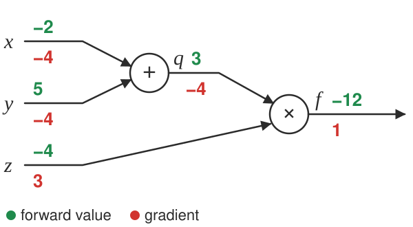
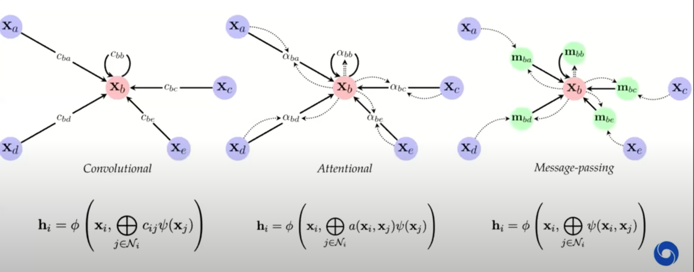

Deep learning#
Backpropagation, CNNs, RNNs and graph networks, normalization layers, and the empirical tricks that make training work.
About this chapter
The basics section covers what every network shares: activation functions, the two standard losses, and backpropagation, which is the chain rule run from the loss back to each weight. The architecture sections follow. A short list of historical networks comes first, then CNNs (convolutions, pooling, what the filters learn), RNNs and LSTMs for sequences, and graph neural networks built on permutation invariance. A reading list on top-down feedback in vision comes after.
The empirical notes at the end are about getting a deep network to train at all: vanishing and exploding gradients, dropout, tricks to squeeze out performance, and batch, layer and RMS normalization. For transformers and language models see the NLP chapter and the LLM research overviews.
Chapter outline: 7 sections
- Basics1 interactive1 figureBackpropagation runs the network forward to get every intermediate value, then sends the gradient \frac{dL}{dz} backward one gate at a time.
- Some historical popular netsLandmark architectures grouped by what they were for: classification CNNs from LeNet to VGG, deeper nets (Inception modules, ResNet's residual connections), searched and efficient architectures, then detection, segmentation and other tasks.
- CNNsA convolutional layer slides the same small filter over every position of the image, so it has few weights and responds the same way wherever a pattern appears.
- RNNsAn RNN applies the same update h_t = f(h_{t-1}, x_t) at every time step and is trained by unrolling it through time.
- Misc architectural components1 figure
- MiscLoose ends: NeRF, which overfits one network to a single scene to render new views, pruning and low-rank compression of trained weights, and neural architecture search.
- Empirical notes1 interactiveBackprop multiplies one local derivative per layer, so in a deep network the gradient can shrink or grow exponentially with depth.
See also notes in 📌 unsupervised learning, 📌 disentanglement, 📌 nlp, 📌 transformers
Basics#
Backpropagation runs the network forward to get every intermediate value, then sends the gradient \(\frac{dL}{dz}\) backward one gate at a time. Each gate multiplies the incoming gradient by its own local derivative.
basic perceptron update rule
if output is 0, label is 1: increase active weights
if output is 1, label is 0: decrease active weights
perceptron convergence thm - if data is linearly separable, perceptron learning algorithm wiil converge
transfer / activation functions
sigmoid(z) = \(\frac{1}{1+e^{-x}} = \frac{e^x}{e^x+1}\)
Binary step
TanH (preferred to sigmoid)
Rectifier = ReLU
Leaky ReLU - still has some negative slope when <0
rectifying in electronics converts analog -> digital
rare to mix and match neuron types
deep - more than 1 hidden layer
mean-squared error (regression loss) = \(\frac{1}{2}(y-\hat{y})^2\)
cross-entropy loss (classification loss) = \(=-\sum_j y_j \ln \hat{p}_j\)
for binary classification, \(y_j\) would take on 0 or 1 and \(\hat y_j\) would be a probability
backpropagation - application of reverse mode automatic differentiation to neural networks’s loss
apply the chain rule from the end of the program back towards the beginning
\(\frac{dL}{d \theta_i} = \frac{dL}{dz} \frac{\partial z}{\partial \theta_i}\)
sum \(\frac{dL}{dz}\) if neuron has multiple outputs z
L is output
\(\frac{\partial z}{\partial \theta_i}\) is actually a Jacobian (deriv each \(z_i\) wrt each \(\theta_i\) - these are vectors)
each gate usually has some sparsity structure so you don’t compute whole Jacobian
pipeline
initialize weights, and final derivative (\(\frac{dL}{dL}=1\))
for each batch
run network forward to compute outputs at each step
compute gradients at each gate with backprop
update weights with SGD


Fig. 63 Figure 1. Backpropagation on f = (x + y) z with x = −2, y = 5, z = −4. Forward values are in green, gradients in red. The multiply gate sends each input the other input’s value times the incoming gradient: z gets q = 3 and q gets z = −4. The add gate passes −4 unchanged to both x and y.#
Some historical popular nets#
Landmark architectures grouped by what they were for: classification CNNs from LeNet to VGG, deeper nets (Inception modules, ResNet’s residual connections), searched and efficient architectures, then detection, segmentation and other tasks.
early CNNs - LeNet (lecun et al. 1998): first, used on MNIST; AlexNet (krizhevsky et al. 2012): 5 conv layers, some pooling/dropout; ZFNet (zeiler & fergus 2013): fine-tuning and deconvnet; VGGNet (simonyan & zisserman 2014): 19 layers, all 3x3 conv and 2x2 max pooling
deeper nets - GoogLeNet (szegedy et al. 2015): lots of parallel elements (Inception module); ResNet (he et al. 2015): 152 layers, connections straight from initial layers to the end, only learns the “residual”; DenseNet (huang et al. 2016)
efficient / searched architectures - SqueezeNet (iandola et al. 2016), NASNet (zoph et al. 2017), EfficientNet (tan & le 2019)
object detection - R-CNN (girshick et al. 2013), Fast R-CNN (girshick 2015), Faster R-CNN (ren et al. 2015), YOLO (redmon et al. 2015)
segmentation - SegNet (badrinarayanan et al. 2015): encoder-decoder; U-Net (ronneberger et al. 2015): biomedical; PixelNet (bansal et al. 2017): pixel-level predictions for different tasks with the same architecture (conv layers, then 3 FC layers that use outputs from all conv layers together)
other - image descriptions with RNN+CNN (karpathy & fei-fei 2014); spatial transformer networks (jaderberg et al. 2015): transformations within the network; WaveNet (van den oord et al. 2016)
CNNs#
A convolutional layer slides the same small filter over every position of the image, so it has few weights and responds the same way wherever a pattern appears. Pooling then downsamples.
kernel here means filter
convolution G- takes a windowed average of an image F with a filter H where the filter is flipped horizontally and vertically before being applied
G = H \(\ast\) F
if we do a filter with just a 1 in the middle, we get the exact same image
you can basically always pad with zeros as long as you keep 1 in middle
can use these to detect edges with small convolutions
can do Guassian filters
1st-layer convolution typically sum over all color channels
1x1 conv - still convolves over channels
pooling - usually max - doesn’t pool over depth
people trying to move away from this - larger strides in conversation layers
stacking small layers is generally better
most of memory impact is usually from activations from each layer kept around for backdrop
visualizations
layer activations (maybe average over channels)
visualize the weights (maybe average over channels)v
feed a bunch of images and keep track of which activate a neuron most
t-SNE embedding of images
occluding
weight matrices have special structure (Toeplitz or block Toeplitz)
input layer is usually centered (subtract mean over training set)
usually crop to fixed size (square input)
receptive field - input region
stride m - compute only every mth pixel
downsampling
max pooling - backprop error back to neuron w/ max value
average pooling - backprop splits error equally among input neurons
data augmentation - random rotations, flips, shifts, recolorings
siamese networks - extract features twice with same net then put layer on top
ex. find how similar to representations are
RNNs#
An RNN applies the same update \(h_t = f(h_{t-1}, x_t)\) at every time step and is trained by unrolling it through time. Gradients shrink exponentially with the time lag, which LSTMs address with gates that let the state pass through unchanged.
feedforward NNs have no memory so we introduce recurrent NNs
able to have memory
truncated - limit number of times you unfold
\(state_{new} = f(state_{old},input_t)\)
ex. \(h_t = tanh(W h_{t-1}+W_2 x_t)\)
train with backpropagation through time (unfold through time)
truncated backprop through time - only run every k time steps
error gradients vanish exponentially quickly with time lag
LSTMS
have gates for forgetting, input, output
easy to let hidden state flow through time, unchanged
gate \(\sigma\) - pointwise multiplication
multiply by 0 - let nothing through
multiply by 1 - let everything through
forget gate - conditionally discard previously remembered info
input gate - conditionally remember new info
output gate - conditionally output a relevant part of memory
GRUs - similar, merge input / forget units into a single update unit
Misc architectural components#
coordconv - break translation equivariance by passing in i, j coords as extra filters
deconvolution = transposed convolution = fractionally-strided convolution - like upsampling
Graph neural networks#
A graph has no natural ordering of its nodes, so a layer must give the same answer under any permutation (invariance), or permute its output the same way (equivariance). Each GNN layer updates a node from its own features and an aggregate over its neighbors.
Theoretical Foundations of Graph Neural Networks
inputs are graphs
e.g. molecule input to classification
one big study: a deep learning appraoch to antibiotic discovery (stokes et al. 2020) - using GNN classification of antibiotic resistance, came up with 100 candidate antibiotics and were able to test them
e.g. traffic maps - nodes are intersections
invariances in CNNs: translational, neighbor pixels relate a lot more
simplest setup: no edges, each node \(i\) has a feature vector \(x_i\) (really a set not a graph)
X is a matrix where each row is a feature vector
note that permuting rows of X shouldn’t change anything
permutation invariant: \(f(PX) = f(X)\) for all permutation matrices \(P\)
e.g. \(\mathbf{P}_{(2,4,1,3)} \mathbf{X}=\left[\begin{array}{llll}0 & 1 & 0 & 0 \\ 0 & 0 & 0 & 1 \\ 1 & 0 & 0 & 0 \\ 0 & 0 & 1 & 0\end{array}\right]\left[\begin{array}{lll}- & \mathbf{x}_{1} & - \\ - & \mathbf{x}_{2} & - \\ - & \mathbf{x}_{3} & - \\ - & \mathbf{x}_{4} & -\end{array}\right]=\left[\begin{array}{lll}- & \mathbf{x}_{2} & - \\ - & \mathbf{x}_{4} & - \\ - & \mathbf{x}_{1} & - \\ - & \mathbf{x}_{3} & -\end{array}\right]\)
ex. Deep Sets model (zaheer et al. ‘17): \(f(X) = \phi \left (\sum_k \psi(x_i) \right)\)
permutation equivariant: \(f(PX) = P f(X)\) - useful for when we want answers at the node level
graph: augment set of nodes with edges between them (store as an adjacency matrix)
permuting permutation matrix to A requires operating on both rows and cols: \(PAP^T\)
permutation invariance: \( f\left(\mathbf{P X}, \mathbf{P A P}^{\top}\right)=f(\mathbf{X}, \mathbf{A})\)
permutation equivariance: \(f\left(\mathbf{P X}, \mathbf{P A P}^{\top}\right)=\mathbf{P} f(\mathbf{X}, \mathbf{A})\)
can now write an equivariant function that extracts features not only of X, but also its neighbors: \(g(x_b, X_{\mathcal N_b})\)
tasks: node classification, graph classification, link (edge) prediction)
3 flavors of GNN layers for extracting features from nodes / neighbors: simplest to most complex
message-passing actually passes vectors to be sent across edges

Fig. 64 Figure 2. The three flavors of GNN layer, from simplest to most general. Convolutional layers weight neighbors by fixed constants c_ij. Attentional layers compute the weights a(xᵢ, xⱼ) from the features. Message passing computes a whole vector ψ(xᵢ, xⱼ) for each edge.#
previous approaches map on to gnns well
GNNs explicitly construct local features, much like previous works
local objectives: features of nodes i and j should predict existence of edge \((i, j)\)
random-walk objectives: features should be similar if i and j co-occur on a short random walk (e.g. deepwalk, node2vec, line)
similarities to NLP if we think of words as nodes and sentences as walks
we can think of transformers as fully-connect graph networks with attentional form of GNN layers
one big difference: positional embeddings often used, making the input not clearly a graph
these postitional embeddings often take the form of sin/cos - very similar to DFT eigenvectors of a graph
spectral gnns
operate on graph laplacian matrix \(L = D - A\) where \(D\) is degree matrix and \(A\) is adjacency matrix - more mathematically convenient
probabilistic modeling - e.g. assome markov random field and try to learn parameters
this connects well to a message-passing GNN
GNN limitations
ex. can we tell whether 2 graphs are isomorphic - often no?
can make GNNs more powerful by adding positional features, etc.
can also embed sugraphs together
continuous case is more difficult
geometric deep learning: invariances and equivariances can be applied generally to get a large calss of architectures between convolutions and graphs
Top-down feedback#
A reading list on networks where later layers send signals back to earlier ones, instead of computing in a single feedforward pass.
Look and Think Twice: Capturing Top-Down Visual Attention With Feedback Convolutional Neural Networks (2015)
neurons in the feedback hidden layers update their activation status to maximize the confidence output of the target top neuron
Top-Down Neural Attention by Excitation Backprop (2017)
top-down attention maps by extending winner-take-all (WTA) to probabilistic maps
Modeling visual attention via selective tuning (1995)
original WTA paper provides only binary maps
Bottom-Up and Top-Down Reasoning with Hierarchical Rectified Gaussians (2016)
Beyond Skip Connections: Top-Down Modulation for Object Detection (shrivastava…malik, gupta, 2017)
Learning to Combine Top-Down and Bottom-Up Signals in Recurrent Neural Networks with Attention over Modules (mittal…bengio, 2020)
Very similar — each layer passes attention (1) to next layer (2) to itself (3) to previous layer
Fast and Slow Learning of Recurrent Independent Mechanisms (madan…bengio, 2021)
Inductive Biases for Deep Learning of Higher-Level Cognition (goyal & bengio, 2021)
Neural Networks with Recurrent Generative Feedback (huang…tsao, anandkumar, 2020)
Deconvolutional Generative Model (nguyen et al. 2018) DGM - hierarchical latent variables capture variation in images + generate images from a coarse to fine detail using deconvolution operations
A generative vision model that trains with high data efficiency and breaks text-based CAPTCHAs (vicarious, 2016)
bayesian model + crf on latents breaks captchas
Combining Top-Down and Bottom-Up Segmentation (2008) (pre-DNNs)
Bottom-up segmentation: group chunks of image into ever-larger regions based on e.g. texture similarity
Top-down segmentation: find object boundaries based on label info
Perceiver: General Perception with Iterative Attention (2021)
Integration of top-down and bottom-up visual processing using a recurrent convolutional–deconvolutional neural network for semantic segmentation (2019)
Very similar to our idea - they have deconvolved feedback to earlier layers
Architecture’s weird, tho - feedback only goes back a few layers
Extremely applied - their result is “we beat SOTA by 3%”
Attentional Neural Network: Feature Selection Using Cognitive Feedback (2014)
Efficient Learning of Deep Boltzmann Machines (2010)
Misc#
Loose ends: NeRF, which overfits one network to a single scene to render new views, pruning and low-rank compression of trained weights, and neural architecture search.
adaptive pooling can help deal with different sizes
NeRF: Representing Scenes as Neural Radiance Fields for View Synthesis (mildenhall et al. 2020)
given multiple views, generate depth map + continuous volumetric repr.
dnn is overfit to only one scene
inputs: a position and viewing direction
output: for that position, density (is there smth at this location) + color (if there is smth at this location)
then, given new location / angle, send a ray through for each pixel and see color when it hits smth
Implicit Neural Representations with Periodic Activation Functions
similar paper
optimal brain damage - starts with fully connected and weeds out connections (Lecun)
tiling - train networks on the error of previous networks
Language model compression with weighted low-rank factorization (hsu et al. 2022) - incorporate fisher info of weights when compressing via SVD (this helps preserve the weights which are important for prediction)
can represent a full-rank weight matrix as a product of low-rank matrices, e.g. to get rank r repr of 10x10 matrix, make it a product of a 10xr and an rx10 matrix
people often use SVD to posthoc compress a DNN
neural architecture search
One Network Doesn’t Rule Them All: Moving Beyond Handcrafted Architectures in Self-Supervised Learning (girish, dey et al. 2022) - use NAS for self-supervised setting rather than supervised
A Deeper Look at Zero-Cost Proxies for Lightweight NAS · The ICLR Blog Track (white…bubeck, dey, 2022)
tl;dr A single minibatch of data is used to score neural networks for NAS instead of performing full training.
Empirical notes#
Backprop multiplies one local derivative per layer, so in a deep network the gradient can shrink or grow exponentially with depth. That is the vanishing and exploding gradients problem.
vanishing gradients problem - neurons in earlier layers learn more slowly than in later layers
happens with sigmoids
dead ReLus
exploding gradients problem - gradients are significantly larger in earlier layers than later layers
RNNs
dropout - randomly zero outputs of p fraction of the neurons during training
like learning large ensemble of models that share weights
2 ways to compensate (pick one)
at test time multiply all neurons’ outputs by p
during training divide all neurons’ outputs by p
softmax - takes vector z and returns vector of the same length
makes it so output sums to 1 (like probabilities of classes)
tricks to squeeze out performance
ensemble models
(stochastic) weight averaging can help a lot
test-time augmentation
this could just be averaging over dropout resamples as well
gradient checkpointing (2016 paper)
10x larger DNNs into memory with 20% increase in comp. time
save gradients for a carefully chosen layer to let you easily recompute
Norm layers#
All three standardize activations, then rescale with learned parameters. They differ in what they average over: the batch for batch norm, the features of one example for layer norm. RMS norm also skips the mean subtraction and the shift \(\beta\).
Batch Normalization - for a mini-batch \({\color[RGB]{255,169,77}\mathcal{B}} = \{x_1, x_2, \ldots, x_{\color[RGB]{255,169,77}m}\}\), normalize each feature across the batch dimension:
where \(\gamma\) and \(\beta\) are learnable scale and shift parameters, and \(\epsilon\) is a small constant for numerical stability.
Layer Normalization - same thing except normalize across features (don’t average over tokens):
where \(\gamma, \beta \in \mathbb{R}^d\) are learnable per-feature parameters.
RMS Normalization
Root Mean Square normalization drops the mean-centering step:
where \(\gamma \in \mathbb{R}^d\) is a learnable scale parameter. Note there is no shift parameter \(\beta\), and no mean subtraction, making it cheaper to compute than LayerNorm
Key ideas
{‘Backpropagation is reverse-mode automatic differentiation’: ‘a forward pass stores every intermediate value, then the chain rule runs from the loss back to each weight.’}
Convolutions share one small filter across every position of the image; pooling downsamples, and stacks of small layers are generally better than big ones.
RNNs reuse one update through time, and their gradients vanish exponentially with the time lag; LSTM gates let the state pass through unchanged.
GNN layers must be invariant or equivariant to permutations of the nodes, and update each node from its own features and its neighbors’.
Gradients can vanish in early layers (sigmoids, dead ReLUs) or explode (RNNs), because backprop multiplies one local derivative per layer.
Dropout trains something like a large ensemble of models that share weights; batch, layer and RMS norm standardize activations over the batch or over the features.